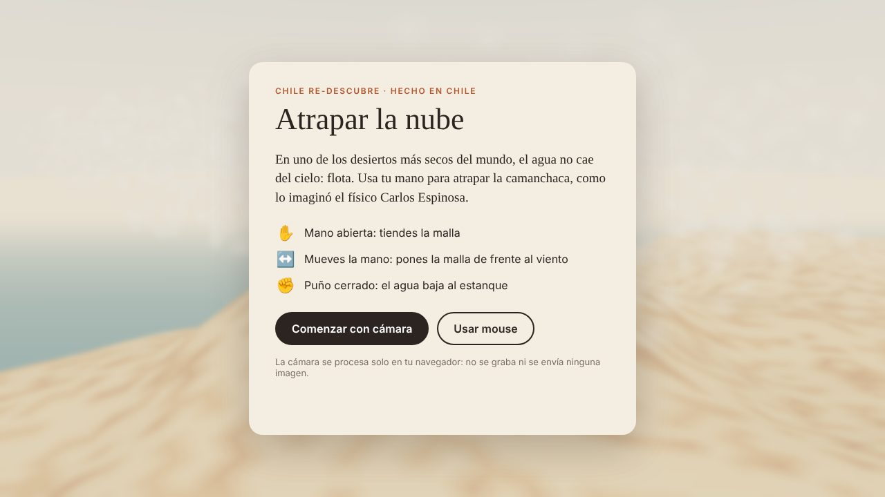
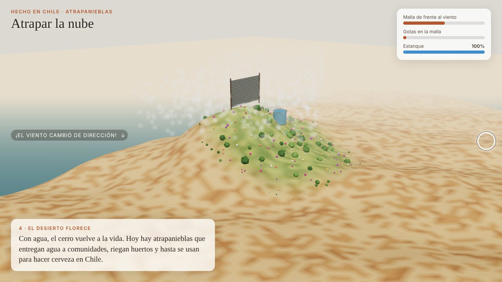

Concepto
En el norte de Chile casi nunca llueve, pero casi todas las mañanas la camanchaca, una niebla espesa que viene del Pacífico, cubre los cerros de la costa. En 1956, durante una sequía en Antofagasta, el físico Carlos Espinosa Arancibia pensó que si la niebla no cae, hay que salir a atraparla. Su patente fue cedida a la UNESCO para que cualquier comunidad pudiera usarla libremente.
En Atrapar la nube el usuario toma su lugar: con su propia mano tiende la malla, la orienta contra el viento y lleva el agua al estanque hasta que el desierto florece. La interacción hace sentir la idea central del invento: el agua ya está en el aire; solo hay que saber dónde y cómo atraparla.
Experiencia y público
Es una pieza de divulgación para público general, pensada para una muestra o exhibición, y se juega en un minuto sin instrucciones previas. Los gestos son naturales y tienen sentido dentro del relato: abrir la mano para tender la malla y cerrar el puño para recoger el agua. El relato avanza en cuatro momentos: la camanchaca, la idea de Espinosa, el cambio de viento y el desierto que florece.
| Gesto | Acción |
|---|---|
| ✋ Mano abierta | Tiende la malla en el cerro |
| ↔️ Mover la mano | Orienta la malla de frente al viento |
| ✊ Puño | El agua baja por la canaleta al estanque |
| 🌬️ Cambio de viento | A mitad de camino hay que reorientar la malla |
Cómo funciona
El gesto se calcula contando los dedos extendidos: un dedo está extendido cuando su punta queda más lejos de la muñeca que su articulación media. La niebla son 2.000 partículas, y una gota queda atrapada solo cuando cruza el plano de la malla. Por eso la malla funciona de verdad solo si está de frente al viento.
Tecnología
| Tipo | Detalle |
|---|---|
| Visión por computador | MediaPipe Tasks Vision · Hand Landmarker |
| Gráficos 3D | Three.js: terreno generado por código, partículas, vegetación instanciada |
| Sonido | Web Audio API, todo generado en código (viento, gotas, acorde final) |
| Publicación | GitHub Pages, sin servidor ni instalación |
Proceso
- Elección del hitoSe compararon dos hitos de Hecho en Chile: el atrapanieblas y el sistema antisísmico. Se eligió el atrapanieblas por estar mejor documentado y por su potencial visual.
- InteracciónSe buscó que cada gesto tuviera sentido en el relato: la mano como la malla que atrapa la nube.
- Primer prototipoLa cámara miraba la malla de canto, y cuando quedaba de frente al viento casi no se veía. Se rediseñó la vista: ahora se mira desde tierra hacia el mar y la niebla viene hacia el usuario.
- Más desafíoTras probarlo, se agregó el cambio de viento a mitad de juego. Suma dificultad sin alargar la experiencia y además es fiel a la realidad: un atrapanieblas se instala según el viento de cada cerro.
- PublicaciónVersión ordenada en GitHub Pages, más una versión en un solo archivo para abrir sin servidor.



Ejercicios de la unidad
| Módulo | Ejercicio | Enlace |
|---|---|---|
| 01 · MediaPipe | Crónicas del Santuario: RPG 3D con 7 gestos | Abrir ↗ |
| 02 · AR.js | Atrapanieblas en tu mesa (marcador Hiro) | Abrir ↗ |
| 03 · A-Frame | Mirador de la camanchaca: VR 360° | Abrir ↗ |